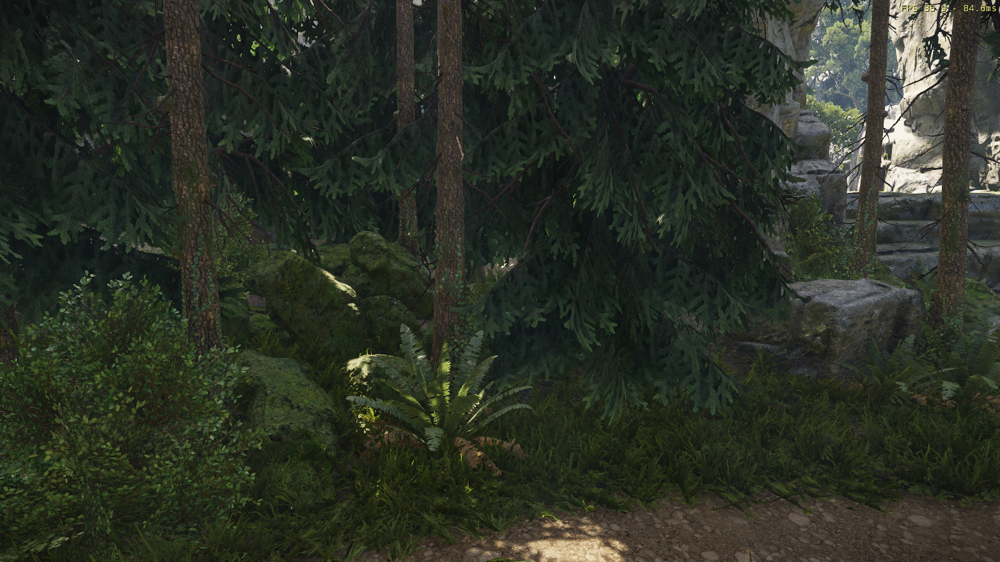
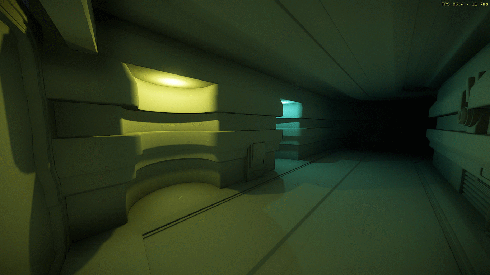
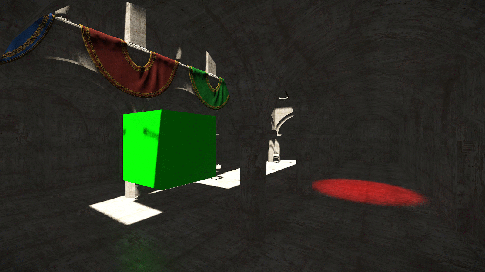
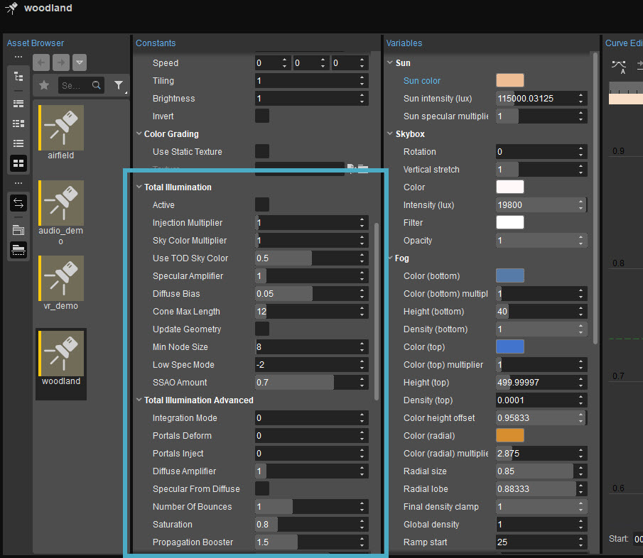
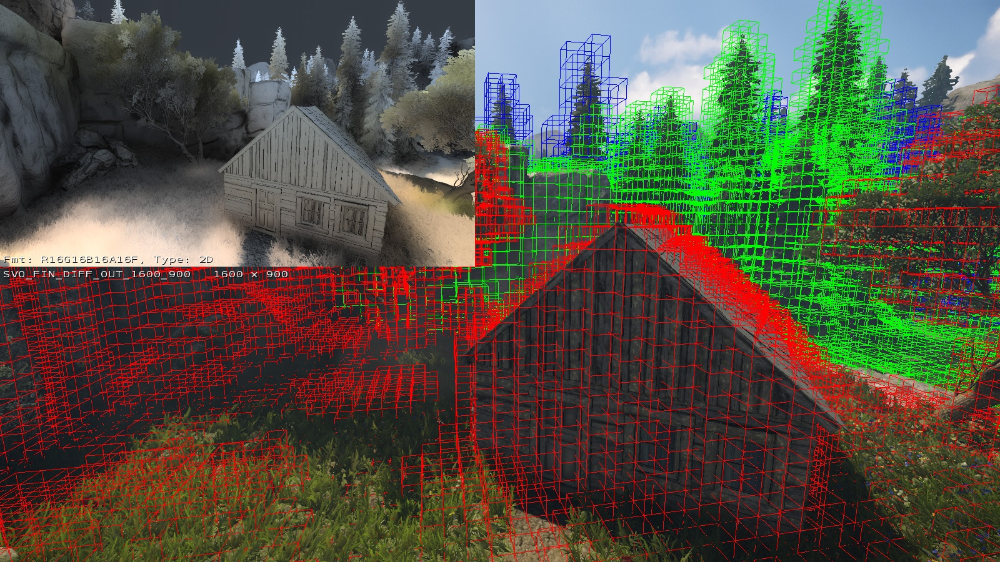
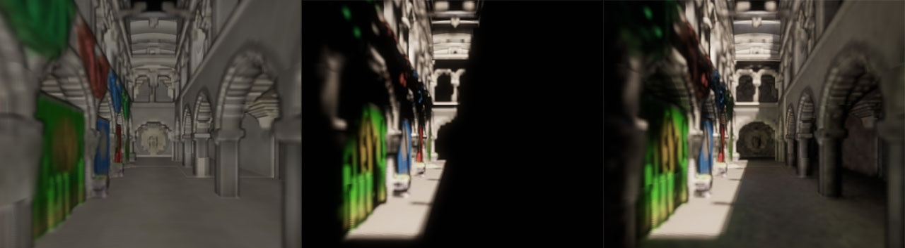

Overview
This GI solution is based on voxel ray tracing and provides the following effects:
- Dynamic indirect light bounce from static and most of dynamic objects.
- Large scale AO and indirect shadows from static geometry (vegetation, brushes and terrain).
- Works without pre-baking and does not require manual setup of many bounce lights or light volumes.
  


Global Illumination examples
How It Works
- First we prepare voxel representation of the scene geometry (at run-time, on CPU, asynchronously and incrementally).
- Every frame on GPU we trace thousands of rays through the voxels (and shadow maps) in order to gather occlusion and indirect lighting.
Performance
The performance depends on which GI settings are used. Usually on Xbox One it takes 3-4 ms of GPU time and on an average PC it takes 2-3 ms (AO + Sun bounce, no point lights, low-spec mode). The fastest configuration is AO only mode; this provides large scale AO at a cost of less than 2 ms on Xbox One.
User Interface
The Global Illumination settings are located in Tools → Environment Editor → Constants → Total Illumination and Total Illumination Advanced: 
Global Illumination settings
For more information about the Global Illumination parameters in this window, click here.
Debugging
- Use e_svoDebug = 6 to visualize the voxels. Make sure all important objects in the scene are voxelized otherwise they will cast no occlusion and no secondary shadows. Also make sure all unwanted and unnecessary occluders are excluded from voxelization.
- Use r_ShowRenderTarget svo_fin to show the output of GI system.

r_ShowRenderTarget svo_fin
- Use r_profiler 1 or 2 to get GPU profiling information.
Current Limitations
- Large scale AO and indirect shadows may be cast properly only by static geometry.
- GI is not working on some forward rendering components like particles or water.
- Some artifacts like ghosting, aliasing, light leaking and noise may be noticeable in some cases.
- Procedural vegetation and merged vegetation do not cast occlusion or secondary shadows.
- If the camera is teleported to a completely new location it may take up to a few seconds until occlusion is working properly.
- Only objects and materials with enabled shadow map casting may produce proper bounced light.
- For dynamic objects indirect light bounce is working only in the areas near voxelized static geometry.
- Bounce light may have a noticeable delay of 1-2 frames.
- r_Supersampling = 2 makes GI look strange but setting lower LowSpecMode (2X lower) pretty much restores the look and speed. Temporal AA (r_AntialiasingMode 2/3) works just fine.
About Integration Modes
By default, when Total Illumination Advanced → Integration Mode set to 0, only opacity is voxelized. This allows very small memory allocations on GPU - about 16 MB. The bounced light is sampled directly from shadow maps (extended to RSM). Compute shaders are not used.
The advantages of mode 0 are:
- Small memory usage.
- Completely dynamic indirect lighting (moving sun does not cause any slowdown).
- Dynamic objects can bounce indirect lighting.
The disadvantages:
- Sometimes low quality of indirect lighting (more noise) especially for small point lights.
- Only single bounce is possible.
- Only diffuse GI is possible (environment probes are supposed to be used for specular).
Integration Modes 1-2 use more memory for voxelization (at least 64 MB) - albedo, normals and several layers of radiance are voxelized together with opacity. The lighting gets injected into voxelization, then it may be propagated (within the voxelization) and is then sampled during ray tracing pass.
Below, you can see example of information stored in voxels: albedo colors, direct light injection and light propagation. 
Albedo colors, direct light injection and light propagation
The advantages of this mode:
- Support for multiple bounces (light source can be marked to be semi-static with multi-bounce support or to be fully dynamic but only with single bounce).
- Support for traced speculars (in mode 2).
- Better quality (smoother) indirect lighting.
The disadvantages:
- Higher memory usage.
- Large semi-static multi-bounce lights can not be moved freely (but slowly moving sun may work fine).
- Dynamic objects can not affect GI (but can receive it of course).
If you get the error message "Display driver stopped responding and has recovered", you can use this workaround from Microsoft. This fix is applicable to Windows 10 as well.
Analytical Occluders Prototype
Hand-placed analytical occluders help get sharper and more detailed occlusion in some places where voxel resolution is not enough. Also analytical occluders can be moved or created in game dynamically (for example for opening doors or small house built by the player in the game).
Enable it using the Analytical Occluders checkbox in the Environment Editor.
It activates support for hand-placed occlusion shapes and also enables soft indirect shadows from characters.
How to Make a New Occluder:
- Create new Static Mesh Entity and set flowing .cgf as entity geometry:
- GameSDK/objects/default/primitive_sphere.cgf for capsule shapes.
- GameSDK/objects/default/primitive_cube.cgf for box shapes.
- GameSDK/objects/default/primitive_cylinder.cgf for cylinder shapes.
- Find the GI and Usage Mode setting in the entity properties and select Analytical Occluder (it is an occluder applied in deferred way after all cone tracing is performed and average light direction is already computed). You can try also Analytical Proxy Hard or Analytical Proxy Soft (occluders that are applied during cone tracing stage and used like true replacement of voxels allowing also light bouncing from them).
- Now you can use non-uniform scaling of entities to produce the shape your want:
- For capsules normally the entity needs to be scaled down in X and Y dimensions for example to 0.1.
- Boxes and cylinders produce sharp contact shadows but capsules (on purpose) have no sharp contact shadows.
The direction of shadows depends on the average light direction in that location, it is calculated automatically as part of GI calculations. The actual mesh used in the entity is not important - only the CGF name is used to pick one of 3 shapes. Normally mesh can be hidden by setting NoDraw shader in material. The entity can be moved freely (ghosting may be removed completely in future versions).
For more information about SVOGI and how to it efficiently in your level, please refer to the following tutorials:
External Links
Crytek’s Artists Showcase CRYENGINE With New Beautiful Forest Maps
SVOTI in Kingdom Come: Deliverance Alpha 0.5 on/off comparison (with FPS)
LIGHT & ART: USING SVOTI TO BUILD BETTER GAMES
SVOTI in Miscreated open world MMO
GI on/off comparision
, YouTube, YouTube
, YouTube,